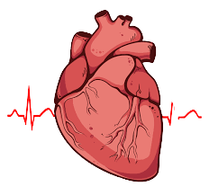
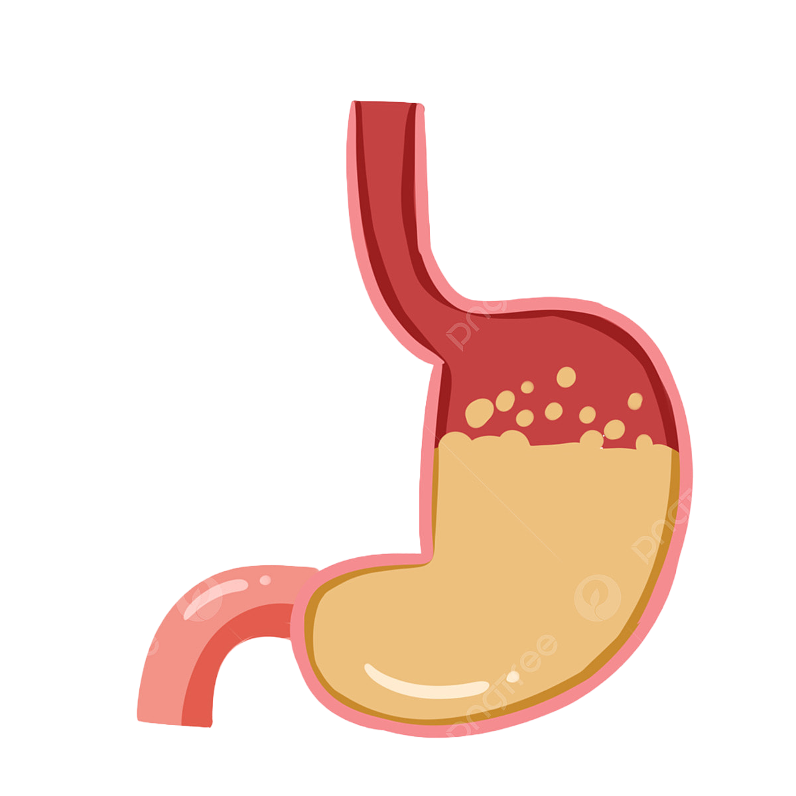
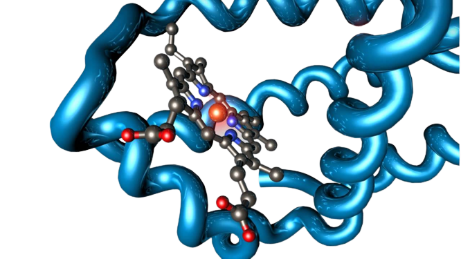
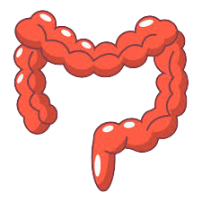

Dear xyz,
| Biological Pathway Scores | Microbial Activity Level | Score-2nd Level Status | Status |
|---|---|---|---|
| Butyrate Production | LOW | 7 | Suboptimal |
| Methane Gas Production | MEDIUM | 13 | Average |
| H2S Production | LOW | 10 | Good |
| Bile Acid Metabolism | LOW | 5 | Good |
| Ammonia Gas Production | MEDIUM | 13 | Average |
| Oxalate Metabolism | LOW | 2 | Suboptimal |
| TMA Production | LOW | 12 | Average |
| Uric Acid Production | MEDIUM | 8 | Good |
| Putrescine Production | LOW | 10 | Good |
| Salt Stress Pathways | LOW | 4 | Good |
| Candida Overgrowth | LOW | 10 | Good |
| Histamine Overproduction | MEDIUM | 9 | Good |
| Cholesterol Metabolism | LOW | 5 | Suboptimal |
| Cortisol Production | LOW | 1 | Suboptimal |
| Fight or Flight Response | LOW | 9 | Suboptimal |
| Thyroxine Production | LOW | 1 | Suboptimal |
| LPS Production | LOW | 9 | Good |
| Diabetes Progression Score | LOW | 1 | Good |
| Intestinal Permeability | MEDIUM | 29 | Average |
| Cardiovascular Health | LOW | 0 | Good |
| Protein Fermentation | LOW | 11 | Average |
| Overall Gas Production | MEDIUM | 12 | Average |
| Antioxidant Production | LOW | 2 | Suboptimal |
| Serotonin Production | LOW | 4 | Suboptimal |
| Ghrelin Production | LOW | 4 | Good |
| COQ10 Production | LOW | 8 | Suboptimal |
| GABA Production | LOW | 5 | Suboptimal |
| Estrogen Production | LOW | 10 | Suboptimal |
| Full Body Scores | Microbial Activity Level | Score | Status |
|---|---|---|---|
| Brain & Cognitive Health | LOW | 6 | Suboptimal |
| Heart& Metabolic Health | LOW | 1 | Good |
| Skin Health | LOW | 10 | Suboptimal |
| Digestive Efficency | LOW | 1 | Suboptimal |
| Hormonal Health | LOW | 3 | Suboptimal |
| Immune System Health | LOW | 36 | Suboptimal |
| Inflammation Response | MEDIUM | 30 | Average |
| Stress Response | HIGH | 9 | Suboptimal |
| Energy Efficiency | LOW | 10 | Average |
| Gut Health | LOW | 31 | Suboptimal |
| Nutrient Absorption Score | Microbial Activity Level | Abbrevation | Absorption Rate |
|---|---|---|---|
| Vitamin A | High | H | 1 |
| Vitamin D | Medium | M | 0.5 |
| Vitamin E | Medium | M | 0.5 |
| Vitamin K | Medium | M | 0.5 |
| Vitamin B1 | Medium | M | 0.5 |
| Vitamin B2 | Medium | M | 0.5 |
| Vitamin B3 | Medium | M | 0.5 |
| Vitamin B4 | Medium | M | 0.5 |
| Vitamin B5 | Medium | M | 0.5 |
| Vitamin B6 | Medium | M | 0.5 |
| Vitamin B7 | Medium | M | 0.5 |
| Vitamin B8 | Medium | M | 0.5 |
| Vitamin B9 | Medium | M | 0.5 |
| Vitamin B10 | Medium | M | 0.5 |
| Vitamin B11 | Medium | M | 0.5 |
| Vitamin B12 | Medium | M | 0.5 |
| Vitamin C | Medium | M | 0.5 |
| Iron | Medium | M | 0.5 |
| Magnesium | Medium | M | 0.5 |
| Selenium | Medium | M | 0.5 |
| Zinc | Medium | M | 0.5 |
| Calicium | Medium | M | 0.5 |
| Copper | Medium | M | 0.5 |
The detailed analysis & dietary recommendations in this report is based on our proprietary method of
unique scoring model incorporating your current dietary choices, symptoms & current health conditions
provided by you in our scientifically designed phenotype assessment application & your gut microbiome
profiling & analysis of microbial activities & behavior conducted by us using your fecal sample as
provided by you through our microbiome sequencing technology.
This blended analysis helps us to decode what your gut microbes are doing inside your body
What your microbes do in the colon depends on:
To analyze this information and tell you what happens next, we identify and examine various functional
activity scores. These biological scores tell us biochemical events happening inside the body:
We have done a comprehensive microbiome assessment to create 28 meaningful functional scores that
supports 10 full body scores for related wellness & diet recommendations. This Translational Science
effort is what allows the information gathered from 130 million data points to be “translated” into action
that can play a valuable role in your personal health journey.
The recommendations for food in this report is based on the above mentioned insights & microbial profile
& is unique for your body to address the dysregulations in your biological functions & overcome /minimize
instances of inflammation.
Each functional score has been rated as Sub-optimal, Average or Good based on scores achieved by incorporating data from phenotype form & gut microbiome profiling analysis. Each of these ratings is categorized as:
| Rating | Parameters indicating | Parameters indicating anti-inflammatory activities |
|---|---|---|
| Sub Optimal | 31-50 | <10 |
| Average | 11-30 | 11-30 |
| Good | <10 | 31-50 |
Cycle includes one sequencing plus 4/6 months membership plan for accessing health insights &
results.
You may refer to your fully integrated whole body scores & biological pathway analysis to get detailed insights on your biology. The recommendations for precision nutrition, supplements & biotics are carved out considering gaps in your current biology. Please follow the recommendations diligently to bring your body back in homeostasis position & improve your gut microbiome diversity.
Brain and Cognitive Health, Status: Sub Optimal
This score assesses how the interactions between your microbiome & the food you eat impact your brain & cognitive health. Our molecular & biological functions analysis assesses your:
A status which is suboptimal means that your current dietary choices are not supporting
your
microbes to promote activities that improve your brain & mental health.Our nutrition & supplement
recommendations are focussed on improving this status.
How we Calculate this score :
To arrive at this integrated health score you see above, we combine multiple functional activities which covers GABA Production, Magnesium absorption, Serotonin production, Cortisol Production, Vitamin B12, Vitamin B9 & Vitamin C absorption, Estrogen production & fight or flight response. Each of these scores have specific level of impact on your brain & cognitive health.This is based on scientific knowledge till date & data we derive from your sequencing & phenotype
Heart& Metabollic Health, Status: Good
This score assesses how the interactions between your microbiome & the food you eat impact your cardiovascular & metabolic health. Our molecular & biological functions analysis assesses your:
A status which is good means that your current dietary choices is promoting beneficial activities for improving heart optimizing your heart & metabolic health. Our nutrition & supplement recommendations are focussed on maintaining this score.
How we Calculate this score :
To arrive at this integrated health score you see above, we combine multiple functional activities which covers GABA Production, Magnesium absorption, Serotonin production, Cortisol Production, Vitamin B12, Vitamin B9 & Vitamin C absorption, Estrogen production & fight or flight response. Each of these scores have specific level of impact on your brain & cognitive health.This is based on scientific knowledge till date & data we derive from your sequencing & phenotype
Skin Health, Status: Sub Optimal
This score assesses how the interactions between your microbiome & the food you eat impact your skin health. Our molecular & biological functions analysis assesses your:
A status which is suboptimal means that your current dietary choices are not supporting your microbes to promote activities that improve your skin health.Our nutrition & supplement recommendations are focussed on improving this status.
How we Calculate this score :
To arrive at this integrated health score you see above, we evaluate functional activities of microbes that directly impact skin pH level & combine multiple functional activities which covers LPS production, Histamine Production, Butyrate production,Intestinal permeability & Vitamin C absorption. Each of these scores have a specific level of impact on your Skin Health. This is based on scientific knowledge till date & data we derive from your sequencing & phenotype
Digestive Efficiency, Status: Sub Optimal
This score assesses how the interactions between your microbiome & the food you eat impact your
digestive health.Our molecular & biological functions analysis assesses how well your body is digesting
protein, carbs & fats.
A status which is suboptimal means that your current dietary choices are not supporting your
microbes to improve your digestive efficiency & optimize nutrient absorption.Our nutrition &
supplement recommendations are focussed on improving this status.
How we Calculate this score :
To arrive at this integrated health score you see above, we combine multiple functional activities which covers Butyrate Production, Methane gas production, H2S production, Ammonia gas production, Bile Acid Metabolism, Oxalate Metabolism, TMA Production, LPS production & Putrescine Production.. Each of these scores have a specific level of impact on your Digestive Efficiency. This is based on scientific knowledge till date & data we derive from your sequencing & phenotype
Hormonal Health , Status: Sub Optimal
This score assesses how the interactions between your microbiome & the food you eat impact your hormone production.Our molecular & biological functions analysis assesses your:
A status which is suboptimal means that your current dietary choices are not supporting your microbes to optimize your hormone levels which can dysregulate your digestive health, metabolic & auto immune health.Our nutrition & supplement recommendations are focussed on improving this status.
How we Calculate this score :
To arrive at this integrated health score you see above, we combine multiple functional activities which covers Serotonin Production, Thyroid Production, Cortisol Production, Estrogen Production & Fight or Flight Response.Each of these scores have a specific level of impact on your Hormonal Health. This is based on scientific knowledge till date & data we derive from your sequencing & phenotype
Immune System, Status: Sub Optimal
This score assesses how the interactions between your microbiome & the food you eat impact your immune system health .Our molecular & biological functions analysis assesses your:
A status which is good means that your current dietary choices are supporting your microbes to improve your immune response to fight toxins & reactive oxidation species(ROS).Our nutrition & supplement recommendations are focussed on improving this status.
How we Calculate this score :
To arrive at this integrated health score you see above, we combine multiple functional activities which covers Butyrate production, LPS Production, Antioxidant production, Uric Acid production, Histamine production, Candida Overgrowth, Vitamin A, Vitamin C, Vitamin D, Vitamin E, Vitamin B9 & Zinc absorption .Each of these scores have a specific level of impact on your Immune System Health. This is based on scientific knowledge till date & data we derive from your sequencing & phenotype
Inflammation Response, Status: Sub Optimal
This score measures the activities of your microbes that can contribute to or reflect inflammation in your gut environment. Inflammation in your gut can be caused by harmful things your microbes produce when protein is inefficiently digested, there's excessive microbial gas production, or you simply have a gut environment that your microbes perceive as threatening.
A status which is average means that your current dietary choices are not supporting your microbes to suppress proinflammatory activities & support anti-inflammatory activities.Our nutrition & supplement recommendations are focussed on improving this status.
How we Calculate this score :
To arrive at this integrated health score you see above, we combine multiple functional activities which covers Butyrate production, methane gas production, H2S production, Ammonia gas production, Uric Acid production, Bile Acid metabolism, Oxalate Metabolism, TMA Production, LPS Production, Antioxidant production, Uric Acid production, Histamine production, Candida Overgrowth, Salt Stress Pathways, Cholesterol Metabolism & Putrescine production .Each of these scores have a specific level of impact on your Inflammation response. This is based on scientific knowledge till date & data we derive from your sequencing & phenotype
Stress Response, Status: Sub Optimal
This score assesses how the interactions between your microbiome & the food you eat impact your stress response .Our molecular & biological functions analysis assesses your:
A status which is sub optimal means that your current dietary choices are not supporting your microbes to improve your stress response.Our nutrition & supplement recommendations are focussed on improving this status.
How we Calculate this score :
To arrive at this integrated health score you see above, we combine multiple functional activities which covers Serotonin Production, Fight or Flight Response, Cortisol Production, Magnesium, Vitamin B1,B3,B9,B12, Vitamin D,Zinc, Vitamin E, Iron & Calcium absorption .Each of these scores have a specific level of impact on your stress response. This is based on scientific knowledge till date & data we derive from your sequencing & phenotype
Energy Efficiency, Status: Sub Optimal
This score assesses how the interactions between your microbiome & the food you eat impact your energy efficiency .Our molecular & biological functions analysis assesses your:
A status which is sub optimal means that your current dietary choices are not supporting your microbes to improve your energy efficiency.Our nutrition & supplement recommendations are focussed on improving this status.
How we Calculate this score :
To arrive at this integrated health score you see above, we combine multiple functional activities which covers Antioxidant Production, Fight or Flight Response, Cortisol Production, COQ10 production,Vitamin B6,B9,B12, Vitamin C,Copper, Iron & Magnesium absorption .Each of these scores have a specific level of impact on your energy efficiency. This is based on scientific knowledge till date & data we derive from your sequencing & phenotype
Gut Health, Status: Sub Optimal
This score assesses how the interactions between your microbiome & the food you eat impact your gut health .Our molecular & biological functions analysis assesses your:
A status which is average means that your current dietary choices are not supporting your microbes to improve your gut health.Our nutrition & supplement recommendations are focussed on improving this status.
How we Calculate this score :
To arrive at this integrated health score you see above, we combine multiple functional activities which covers Butyrate production, Methane gas production, H2S production,Ammonia Production, Uric Acid Production,Bile Acid Metabolism, Oxalate Metabolism, LPS production, TMA production, Candida Overgrowth, Histamine Production,Antioxidant Production,Salt Stress Pathways, Cholesterol Metabolism,Putrescine Production,Ghrelin Production,Inflammatory activity, overall gas production, Digestive Efficiency, Intestinal Permeability, Protein Fermentation, Estrogen Production, Thyroxine Production, Cortisol Production & fight or flight response .Each of these scores have a specific level of impact on your Gut health. This is based on scientific knowledge till date & data we derive from your sequencing & phenotype
Individual Molecuar Health Scores
How we Calculate each of the below scores?
Our high-resolution data allows us to see which metabolic and signaling pathways are activated When you see the phrase, “Pathway Activity,” it’s referring to what is actively happening in your cells or what your microbes are actively doing in your gut, that is, how molecules (metabolites) are being processed to form others. To develop our scores we first build our own custom pathways, then define the logic needed to score them based on the expressed genes that have known molecular roles. Your unique levels of pathway activities help our understanding of your overall biology and give us the ability to address your health-related functions with molecular-level precision.
Butyrate Production, Status:Sub Optimal
This score assesses all biochemical activities that promote production of beneficial nutrients- Butyrate. Butyrate is an essential short chain fatty acid released by some specific beneficial microbes in your gut when you feed them with high fiber foods. High butyrate production reflects strong gut lining, improved insulin sensitivity, high satiety levels, hormonal balance, metabolism & production of various neurotransmitters. A high level of activity & score is considered to be good.
Serotonin Production, Status: Sub Optimal
This score assesses the activities of microbes that promote production of Serotonin in the gut.Serotonin, also referred to as, mood hormones plays a key role in our mental health and helps us with feelings of happiness and wellbeing.Serotonin works to regulate mood, sleep, appetite, digestion, and social behavior, making it a strong link in depression studies.This brain hormone relies heavily on a healthy gut with almost 95% of it produced from our gut bacteria. Boosting levels of serotonin helps us with feelings of happiness and wellbeing. But this brain hormone relies heavily on a healthy gut with almost 95% of it produced from our gut bacteria.Serotonin production is impacted by the level of active Vitamin D in the body.
Thyroxine Production, Status: Sub Optimal
This score assesses the levels of Thyroid Production & conversion of T4 to T3.Thyroid hormones play a key role in many functions which includes metabolism, our ability to absorb nutrients specifically Zinc, iron & Selenium, our ability to conceive, our sleep patterns, our energy levels, anxiety, mood & depression & digestive issues.Gastrointestinal symptoms of thyroid dysfunction are numerous, and include trouble swallowing, heartburn, indigestion, reduced acid production, nausea or vomiting, gallbladder complaints, abdominal discomfort, gas, bloating, diarrhea, constipation, and general digestive complaints including Irritable Bowel Syndrome (IBS). Thyroid dysregulation is also linked to disruption in Estrogen Production. Dysregulation in the thyroid impacts gut microbiome balance & vice versa & also triggers onset of Autoimmune disease- Hashimoto.
A low or high Thyroxine production indicates high level of pro-inflammatory patterns & focus should be average level of thyroxine production
Cortisol Production, Status: Sub Optimal
This score assesses the levels of Cortisol Production & stress related disorders.Cortisol, also referred to as stress hormones plays a key role in our mental, digestive & metabolic health. The overproduction of this hormone can disrupt the gut-brain communication via the HPA axis & can even trigger autoimmune conditions. Average score & level of activity is considered to be good.
Fight or Flight Response , Status: Suboptimal
Norepinephrine & epinephrine hormones are associated with fight or flight response. Although having a
regulated level of these hormones is necessary to deal with emergency situations, their elevated levels &
for a longer period of time can trigger stress, anxiety & depression.Together with adrenaline,
norepinephrine increases heart rate and blood pumping from the heart. It also increases blood pressure
and helps break down fat and increase blood sugar levels to provide more energy to the body.
In the brain, norepinephrine plays a role in the sleep-wake cycle, helping you to wake up, in increasing
attention and focusing on performing a task ,and in memory storage. It is also important for emotions. On
the flip side, low levels of fight or flight response can directly deprive our body of oxygen to carry out its
functions, thereby directly influencing our heart & brain functions.An average score & activity level is
considered good.
Methane Gas Production, Status: Average
This score assesses activities taking place inside the gut that results in release of methane gas in the gut. High methane production has been linked with some motility issues in the gut (how your food moves along the digestive tract), as well as pro-inflammatory patterns that can negatively affect your intestinal lining. A low score & activity level is considered to be good.
Hydrogen Sulphide, Status: Good
This score assesses all activities of microbes living in the gut that lead to production of hydrogen sulfide gas in the gut. H2s can be made from some proteins that contain sulfur amino acids from ingested sulfate, sulphite molecules/preservatives found in dried fruits & frozen meat, alcoholic beverages , cruciferous vegetables & even saturated fats. When H2S activity is high ( colon pH level is Alkaline), it can lead to pro-inflammatory activity which can harm/weaken our gut lining & create situations of leaky gut. A high level of H2S can also lead to Chronic Diarrhea, fast gut transit time & even Ulcerative Colitis. A low score & activity level is considered to be good.
Ammonia Gas Production , Status: Average
This score evaluates activity of microbes living in the gut that leads to production of ammonia. Ammonia can be made from amino acid as a byproduct of breakdown of protein or from ingested nitrate of nitrate molecules found in products such as preservative foods, additives, preserved meat & dried fruits. A low score is considered to be good.
Uric Acid Production, Status: Good
This score assesses the level of activity of microbes in the gut that result in uric acid production. Uric acid is a byproduct that comes from consumption of purines which is generally found in beer, sugary soda, seafood, turkey, bacon,organ meat, saturated fats, high protein & high oxalate foods. Excessive Uric Acid Production can contribute to gout & impact our bone health & can even lead to Osteoporosis. A low score & activity level is considered to be good.
Bile Acid Metabolism, Status: Good
This score assesses the levels of activity of all metabolic pathways that include bile acids. Normally bile acids are made by the liver and secreted into the small intestine to help with fat digestion. Most are reabsorbed, but small levels of bile acids can enter the colon in the form of bile salts. Your gut microbiota can change them back into bile acids, after which they can even be recycled back to the liver. If this activity is relatively high or excessive, it may be an indicator of your inability to break down fat or absorb nutrients properly, which can contribute to a pro-inflammatory environment or negative liver-related effects, as microbiome's bile acid pathways have been implicated in fatty deposits in the liver. A low score & activity level is considered to be good.
Oxalate Metabolism, Status: Sub optimal
This score assesses activities of all microbes living in the gut that results in detoxifying oxalate.High level of circulating oxalate in the bloodstream results in kidney stones. Oxalate neutralizing microbes can help you detoxify oxalate that you ingest from your food. A high score & activity level is considered to be good.
Cholestrol Metabolism, Status: Sub Optimal
This score assesses how well your gut microbiome can metabolize cholesterol. Naturally your body
is capable of producing cholesterol. You also get cholesterol from dietary sources- most specifically
through animal fat & protein. Excess Cholesterol in your body comes from imbalance between input
& output. Output proceeds consist of bioconversion to bile acids in the liver & steroid hormones in
diverse tissues.
However the most important way of throwing cholesterol out of the body is through cholesterol
metabolism by the gut microbiome which is ultimately eliminated in the feces. This is generally
achieved when you have specific microbes in your gut that facilitates bioconversion of cholesterol in
the gut lumen & releases metabolite coprostanol. The high this conversion rate is, the better your
cholesterol metabolism is.
A high score & activity level is considered to be good & indicate that your body has optimum level of circulatory cholesterol.
TMA Production, Status: Average
This score assesses all metabolic activity that results in production of Trimethylamine(TMA). TMA is a molecule that gets converted into Trimethylamine oxide (TMAO) in the liver. It is this TMAO that creates plaque in arteries & increases risk of cardiovascular diseases. The biggest sources for the release of TMA by our gut microbes are Choline & Cartenine. A low activity & low score is considered to be good.
LPS Production, Status: Good
This score measures production of lipopolysaccharides(LPS) in the gut. LPS is a proinflammatory molecule that gut microbes make which can trigger an immune system response specifically if it passes to the bloodstream through gut lining.LPS is a fairly large molecule and should not be able to pass through the gut lining into the bloodstream to circulate the body if the intestinal barrier is strong. A strong mucosal layer and intestinal lining is helpful for mitigating the negative effects of producing too much LPS. Having a high Uric Acid or Oxalic acid metabolism, foods such as high in preservatives, protein & even Spinach can stimulate increased LPS production. A low score & activity level is considered to be good.
Putrescine Production, Status: Good
This score assesses the levels of activity of all microbial pathways that lead to putrescine production. Putrescine is a molecular byproduct of protein fermentation - a microbial breakdown of protein.If the activities of putrescine production pathways are too high, it can be harmful to the gut environment and the intestinal barrier lining. It is also one of the signs that you may be eating too much protein that may not be digested properly. A low score & activity level is considered to be good.
Candida Overgrowth, Status: Good
This score assesses the level of candida overgrowth. Generally Candida Albicans, which is the most pathogenic one, is found in 50% of the global population. Besides a rare Candida Strain- Candida dubliniensis is found in only 2% to 3% of the total population. This strain is similar to Candida Albicans but is less pathogenic. Candida is a nasty microbe & can take the form of both Fungi & Yeast. Its overgrowth can suppress DAO enzymes, thereby leading to histamine intolerance. A low score & activity level is considered to be good.
Histamine Overproduction, Status: Good
This score assesses the level of production of Histamine in relation to release of diamine oxidase (or DAO). If the release of DAO is slow to help lower histamine production, its levels can escalate and cause more severe symptoms that may even mimic food poisoning. Over time, this can lead to developing ‘Histamine Intolerance,’ i.e. someone who isn’t fully equipped to overcome histamine production.A low score & activity level is considered to be good.
Protien Fermentation, Status: Average
This pathway indicates whether your body is digesting protein properly. The digestion of protein begins the moment you start chewing it & continues down to the stomach. If protein is not fully broken down in the process due to high protein content in your last meal, low stomach acid or if you are consuming too much protein, gut microbes will ferment the excess protein & release harmful byproducts. These byproducts can trigger inflammation & keep your immune system in a constant alert position. If the production of these harmful byproducts are not kept in check, it can make your immune system attack its own brother immune cells & trigger autoimmune conditions. A low activity level & low score is considered to be good.
Intestinal Permeability, Status: Average
This score assesses strength of gut lining or intestinal barrier & mucosa layer that protects it. When gut lining is compromised, things from the outside environment such as toxins, medications, harmful bacteria & even food particles can enter the bloodstream from the gut & can negatively impact the immune system. A low score & activity level is considered to be good & means that biochemical activities are supporting strength of gut lining & there are very few harmful microbes present.
Overall Gas Production, Status: Average
Overall gas production is associated with digestive difficulties, discomfort bloating, constipation & inflammation. It consists of Ammonia, Methane & H2S gas production.A good score means that your microbes are not actively engaged in gas production functions.
Antioxidant Production, Status: Sub Optimal
This score assesses the level of antioxidants digested & metabolized by the gut microbiome. Generally, our cells experience stress via Oxidative stress. Producing energy is a lot of work & as a result harmful byproducts - Free Radicals. This should not be an issue since our body is capable of producing & releasing antioxidants to cordon off oxidative stress. However, consuming a diet high in antioxidants does not mean that your body will get all the benefits. Only 5% to 10% of antioxidants are metabolized by the small intestine & it is the responsibility of our gut microbes to metabolize the rest of them. If you do not have specific microbes that can metabolize antioxidants into beneficial compounds,you will not be able to extract benefits. A high score & activity level is considered to be good.
Salt Stress Pathways, Status: Good
This score assesses excessive salt in the gut environment. This means that an individual needs to adjust its salt/sodium intake & hydration levels. Too much salt for the gut microbiome makes the environment of the gut microbiome less favorable for some beneficial microbes. A low score is considered to be good & means that microbial salt stress is low.
GABA Production, Status: Suboptimal
This score assesses the levels of GABA production. Gamma-Aminobutyric acid is an important inhibitory neurotransmitter that helps stabilize mood by having anti-anxiety and anti-seizure characteristics. Disruption to GABA production has been associated with a number of mental health illnesses, like schizophrenia, bipolar disorder, and anxiety disorder. A high score is considered to be good.
COQ10 production, Status: Suboptimal
This score assesses the levels of COQ 10 production. Coenzyme Q 10 (CoQ10) is a naturally occurring molecule that plays a key role in Electron Transport Chain pathway and ATP production in mitochondria. When CoQ10 is depleted energy production in cells is reduced leading to fatigue symptoms consistently reported in CoQ10-deficient populations.The essential nutrients enhancing energy production can be provided either as supplements or in a form of foods that contain specific ingredients that enhance cellular respiration pathways and mitochondrial health. A high score is considered to be good
Ghrelin production, Status: Good
This score assesses the level of your Ghrelin Secretion. Ghrelin, also known as Hunger hormone, impacts your food uptake & hunger level.This hormone is produced by enteroendocrine cells(EEC) of the gastrointestinal tract that influence appetite, digestion, intestinal absorption and motility .The release of GI peptides/digestive enzymes by EECs throughout the digestive tract is mediated in response to nutrient availability and ultimately serves to communicate metabolic and nutrient status to the central nervous system (Brain). The brain subsequently determines and directs appetite and decisions on food seeking, food intake and food choice to balance the body's energy needs. This dynamic two-way communication of the gut–brain axis determines ongoing eating behavior and impacts on overall energy homeostasis. Dysregulation in Ghrelin levels has been associated with fat storage, obesity & type-2 diabetes. A low score & activity level is considered to be good.
Estrogen Production,Status: Sub Optimal
This score assesses the levels of Estrogen Production. Normally Estrogen is a hormone that regulates
our metabolic activities & influences vulnerability to weight gain & obesity as well as risk of developing
cancer( Breast, Endometrial, Cervical, and Ovarian Cancer In females & Prostate in males). The
production of this hormone is driven by Beta-Glucuronidase activity. Beta-Glucuronidase is an enzyme
that plays a pivotal role in digestion, particularly in breaking down certain things such as complex
carbohydrates, detoxification of estrogen, thyroid hormone and other environmental toxins.The
production of this enzyme depends upon the activity & abundance of level of a group of microbes called
Estrobolome. Disruption in the level of Beta-Glucuronidase enzyme can cause development of a
pro-inflammatory environment & Estrogen related pathologies.
This disruption is linked to development of PCOS, obesity, type 2 diabetes( low estrogen levels, Breast,
Endometrial, Cervical, and Ovarian Cancer (In females) & Prostate cancer (in male)( excess estrogen
levels). An average score is good, which means these pathway activity levels are regulated in your
sample.
Low activity level & score that needs improvement means that your current dietary choices are dysregulating activities of the Estrobolome group of microbes. Please follow our nutrition & supplement recommendations to optimize activity level of estrogen stimulating microbes from low to average.